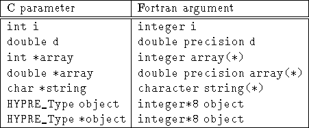

Although HYPRE is written in C, a Fortran interface is provided. The Fortran interface is very similar to the C interface, and can be determined from the C interface by a few simple conversion rules. These conversion rules are described below.
Let us start out with a simple example. Consider the following HYPRE prototype:
int HYPRE_IJMatrixSetValues(HYPRE_IJMatrix matrix,
int nrows, int *ncols,
const int *rows, const int *cols,
const double *values);
integer*8 matrix,
integer nrows, ncols(MAX_NCOLS)
integer rows(MAX_ROWS), cols(MAX_COLS)
double precision values(MAX_COLS)
integer ierr
call HYPRE_IJMatrixSetValues(matrix, nrows, ncols, rows, cols,
& values, ierr)
test directory for the correct
condensed names. In the future, this aspect of the interface conversion
will be made consistent and straightforward.
The Fortran subroutine argument list is always the same as the
corresponding C routine, except that the error return code ierr
is always last. Conversion from C parameter types to Fortran argument
type is summarized in Table 8.1.

Table 8.1: Conversion from C parameters to Fortran arguments
Arrays arguments in HYPRE are always of type (int *) or
(double *), and the corresponding Fortran types are simply
integer or double precision arrays. Note that the
Fortran arrays may be indexed in any manner. For example, an integer
array of length N may be declared in fortran as either of the
following:
integer array(N)
integer array(0:N-1)
HYPRE objects can usually be declared as in the table because
integer*8 usually corresponds to the length of a pointer.
However, there may be some machines where this is not the case
(although we are not aware of any at this time). On such machines,
the Fortran type for a HYPRE object should be an integer of
the appropriate length.